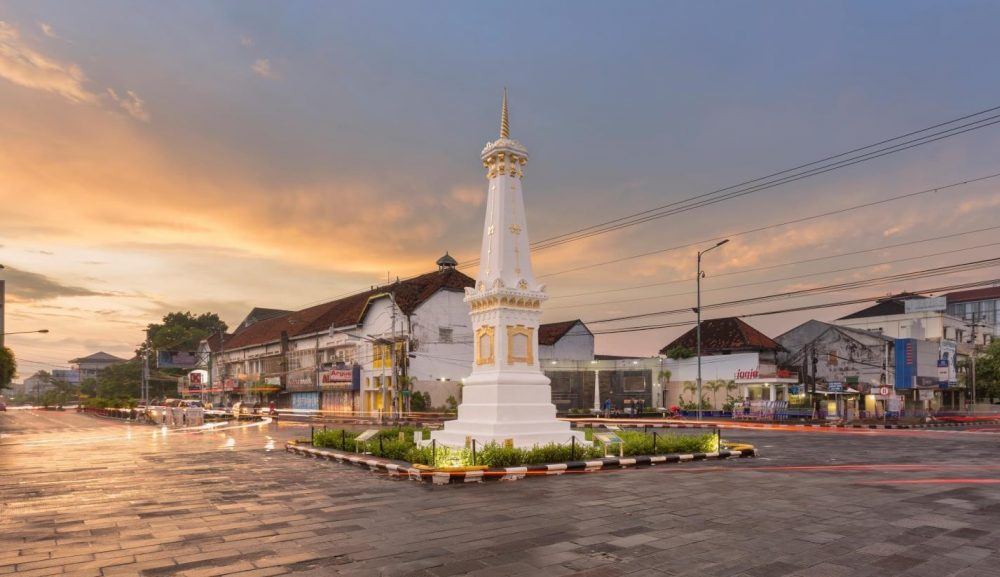
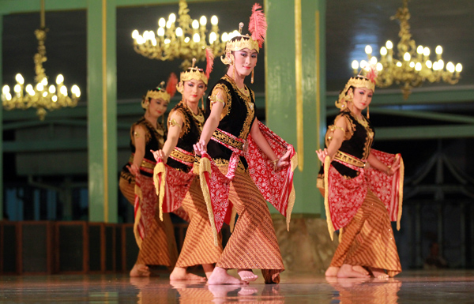
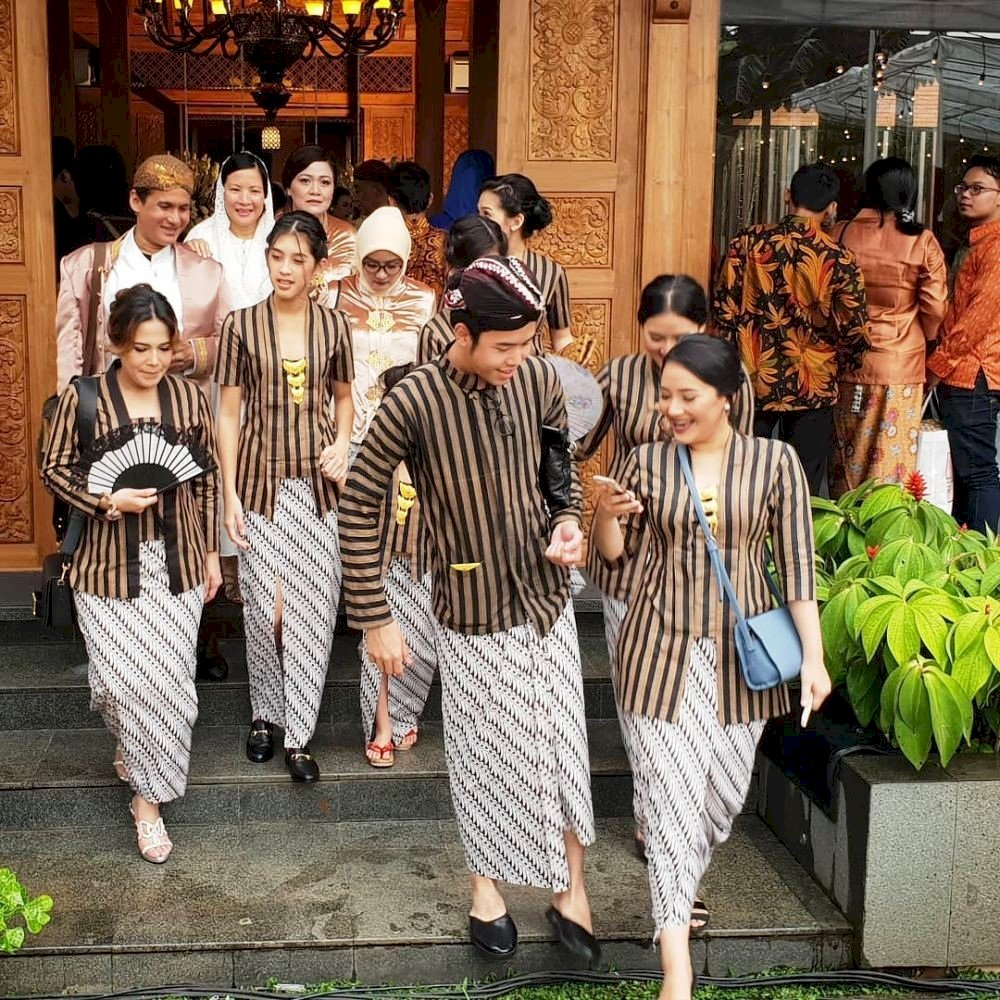
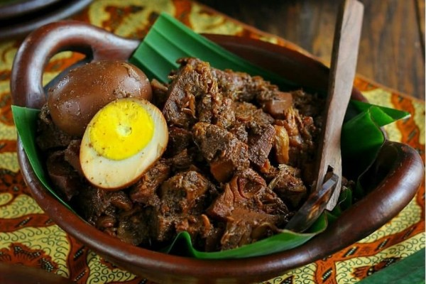

DAERAH ISTIMEWA YOGYAKARTA
About
Daerah Istimewa Yogyakarta, disingkat DIY atau DI Yogyakarta adalah daerah Istimewa setingkat provinsi di Indonesia yang merupakan peleburan dari Negara Kesultanan Yogyakarta dan Negara Kadipaten Paku Alaman. Daerah Istimewa Yogyakarta terletak di bagian selatan Pulau Jawa, dan berbatasan dengan Provinsi Jawa Tengah dan Samudra Hindia.Daerah Istimewa yang memiliki luas 3.185,80 km2 ini terdiri atas satu kota, dan empat kabupaten, yang terbagi lagi menjadi 78 kapanewon/kemantren, dan 438 kalurahan/kelurahan. Menurut sensus penduduk 2010 memiliki populasi 3.452.390 jiwa dengan proporsi 1.705.404 laki-laki, dan 1.746.986 perempuan, serta memiliki kepadatan penduduk sebesar 1.084 jiwa per km2
Rumah Adat

Rumah adat Daerah Istimewa Yogyakarta juga disebut Joglo. Perbedaannya dengan Joglo Jawa Tengah yaitu Joglo DIY menyerupai bangsal kencono dari keraton Yogyakarta Hadiningrat. Bagian depan rumah biasanya berupa pendopo luas yang dipakai untuk pertemuan, sedangkan tiang utamanya sama-sama menggunakan material kayu.
Alat Musik

Jawa Tengah dan Yogyakarta sama-sama memiliki gamelan sebagai salah satu alat musik tradisionalnya. Alat musik tradisional ini telah dikenal tidak hanya di tingkat nasional, namun hingga ke mancanegara.Kata gamel ini kemudian diberi akhiran ‘an’ untuk menunjukkan kata benda. Gamelan bisa dimaknai sebagai seperangkat alat musik yang dipukul atau ditabuh. Alat musik tradisional ini diperkirakan sudah ada semenjak 404 Masehi.Gamelan Jawa memiliki sistem nada slendro dan pelog. Slendro berarti lima nada dan pelog berarti tujuh nada. Dua sistem nada ini diatur berdasarkan jarak nadanya. Biasanya laras slendro memiliki jarak nada yang sama. Sedangkan laras pelog memiliki jarak nada yang lebar serta pendek.
Tarian Adat

Tari Serimpi adalah tarian sakral yang berasal dari kesultanan Yogyakarta. Tarian ini hanya dipentaskan pada acara-acara penting dan hanya dimainkan dalam lingkungan keraton, sebagai bagian dari acara kenegaraan. Namun dengan perkembangan zaman, tarian ini boleh ditarikan di beberapa acara lainnya, mengingat tarian ini sudah mendunia.
Tari Serimpi sangat mengandung nilai estetika yang memperlihatkan keanggunan, kecantikan, dan kesopanan sang penari. Gerakan dalam tarian ini sangat lembut dan lemah gemulai dengan diiringi alunan gamelan dan juga adanya tembang-tembang Jawa yang terdengar.
Perpaduan gerakan tari yang lemah gemulai dan alunan gamelan dan tembang Jawa menjadi satu kesatuan yang apik jika diperlihatkan.
Pakaian Adat

Surjan Salah satu busana ikonis nya lagi yaitu Surjan yang biasanya dipakai oleh kaum laki. Busana adat Yogyakarta ini biasanya digunakan di upacara adat Yogyakarta, seperti Grebeg. Surjan juga bisa dikenal dengan pakaian Takwa oleh masyarakat Yogyakarta. MotiF dari Surjan juga sangat beragam, tetapi surjan sering ditemukan dengan motif garis-garis membujur, kotak-kotak, dan beberapa hasil kombinasi antara garis vertikal dan garis horizontal lainnya.
Selain motif garis dan kotak, ada juga yang Namanya surjan ontrokusuma yang bermotif bunga. Surjan ontrokusuma biasanya terbuat dari kain sutra yang bermotif berbagai macam bunga. Surjan ini biasanya dipakai oleh bangsawan dan pejabat. Surjan biasanya ditemukan dengan warna yang lumayan gelap seperti coklat dan hitam yang dipadukan dengan kain jarik dan blangkon.
Senjata
Keris adalah senjata tradisional khas Yogyakarta yang digunakan dengan cara menghunus bilahnya pada pertarungan jarak dekat. Bentuk keris biasanya berlekuk dengan gagang, dan dibawa dengan dimasukkan ke dalam wrangkanya.
Makanan

Gudeg adalah hidangan khas Daerah Istimewa Yogyakarta yang terbuat dari nangka muda yang dimasak dengan santan.
Perlu waktu berjam-jam untuk membuat hidangan gudeg. Warna cokelat biasanya dihasilkan oleh daun jati yang dimasak bersamaan. Gudeg biasanya dimakan dengan nasi dan disajikan dengan kuah santan kental (areh), ayam kampung, telur, tempe, tahu, dan sambal goreng krecek.